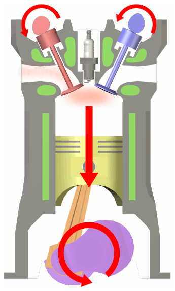
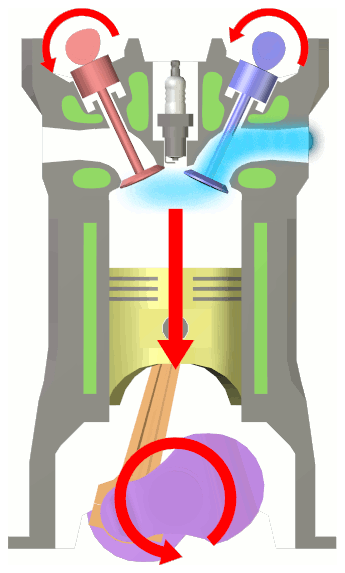
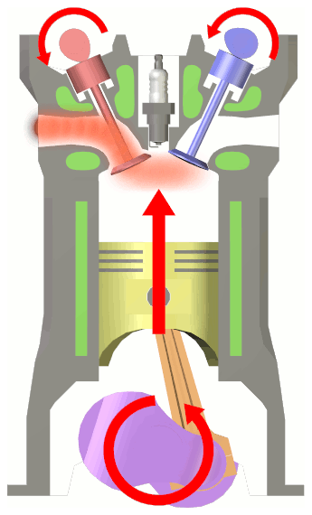
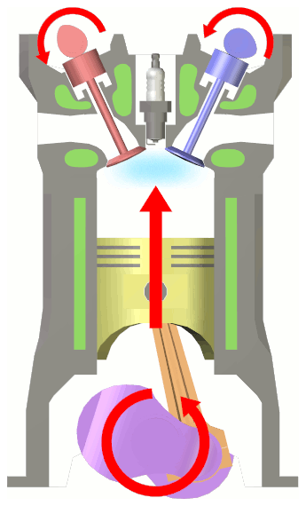

Physik · Ottomotor
Die vier Takte erklären
Die Bilder sind absichtlich nicht in der richtigen Reihenfolge angeordnet.
Ordne und beschreibe.
Trage zu jedem Bild den Takt, die Bewegung des Kolbens, die Stellung der Ventile und den Vorgang im Zylinder ein.

A
B
C
DFormuliere die Energiekette.
Welche Energieformen werden im Ottomotor nacheinander umgewandelt?
→→
Abbildungen: Wapcaplet · Wikimedia Commons · CC BY-SA 3.0. Zugeschnitten, neu angeordnet.